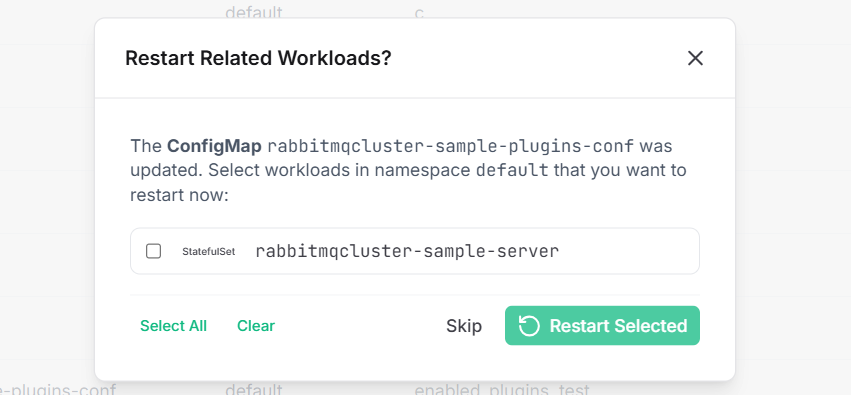

Config & Secret Sync
Config ve Secret Senkronizasyonu
Deep integration tracking dynamically maps ConfigMaps and Secrets to their dependent Deployments, StatefulSets, and DaemonSets. When a configuration is modified, the system proactively prompts you to roll out a restart to apply those changes instantly.
Derin entegrasyon takibi, ConfigMap ve Secret'ları kendilerine bağımlı olan Deployment, StatefulSet ve DaemonSet'lere dinamik olarak eşler. Bir yapılandırma değiştirildiğinde, sistem bu değişiklikleri anında uygulamak için size otomatik olarak "yeniden başlatma (restart)" yapmanızı önerir.

Automated Dependency Graph
Otomatik Bağımlılık Grafiği
The backend natively analyzes envFrom, valueFrom, and volumeMounts across the namespace to precisely identify which pods actually consume the modified ConfigMap/Secret.
Sistem, hangi pod'ların değiştirilen ConfigMap/Secret'ı fiilen tükettiğini kesin olarak belirlemek için ad alanındaki (namespace) envFrom, valueFrom ve volumeMounts tanımlamalarını doğal olarak analiz eder.
Zero-Downtime Rollout
Kesintisiz (Zero-Downtime) Sürüm
Clicking "Restart Selected" triggers a graceful rollout restart instead of abruptly killing pods, ensuring service up-time remains unimpacted during the configuration phase.
"Seçilenleri Yeniden Başlat"a tıklamak, pod'ları aniden öldürmek yerine kademeli (graceful rollout) bir yeniden başlatma tetikler; konfigürasyon aşamasında hizmetin çalışma süresinin (up-time) etkilenmemesini sağlar.